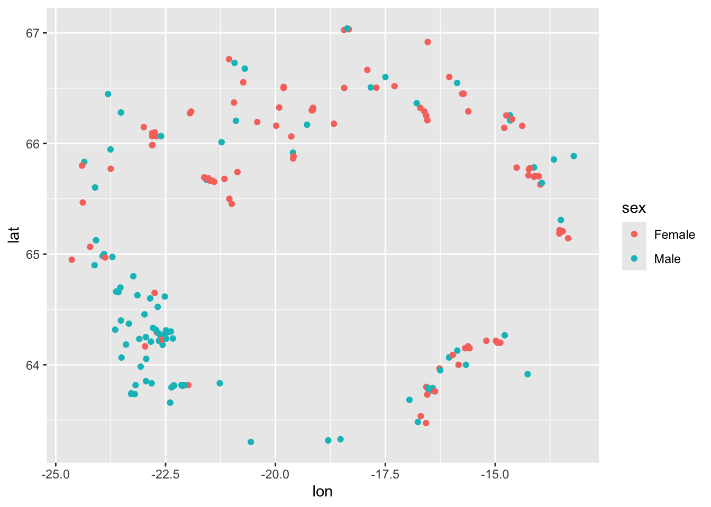
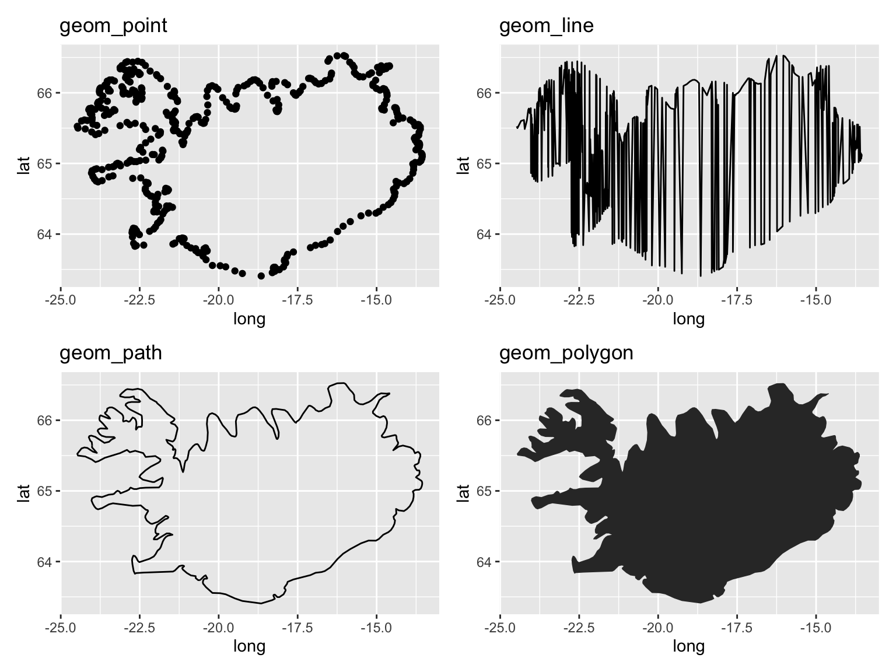
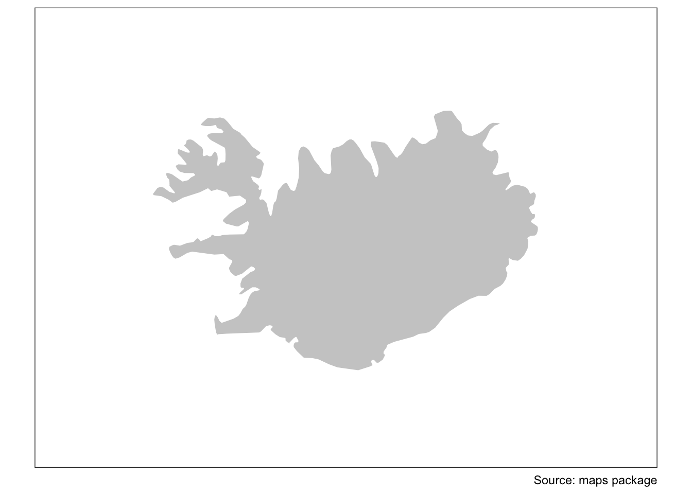
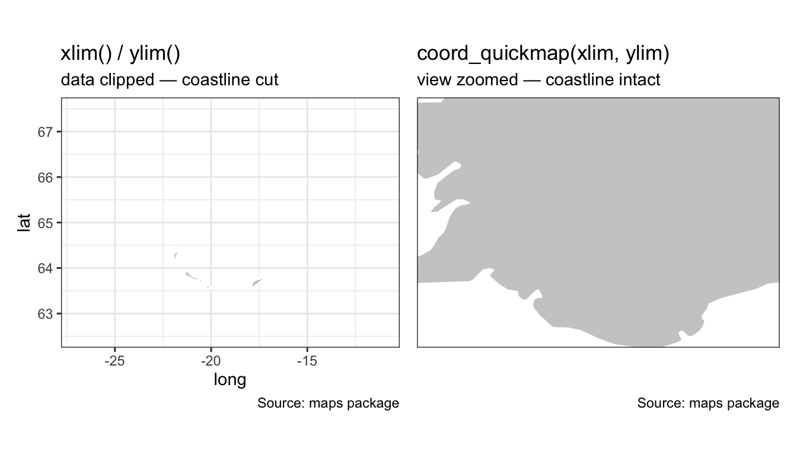
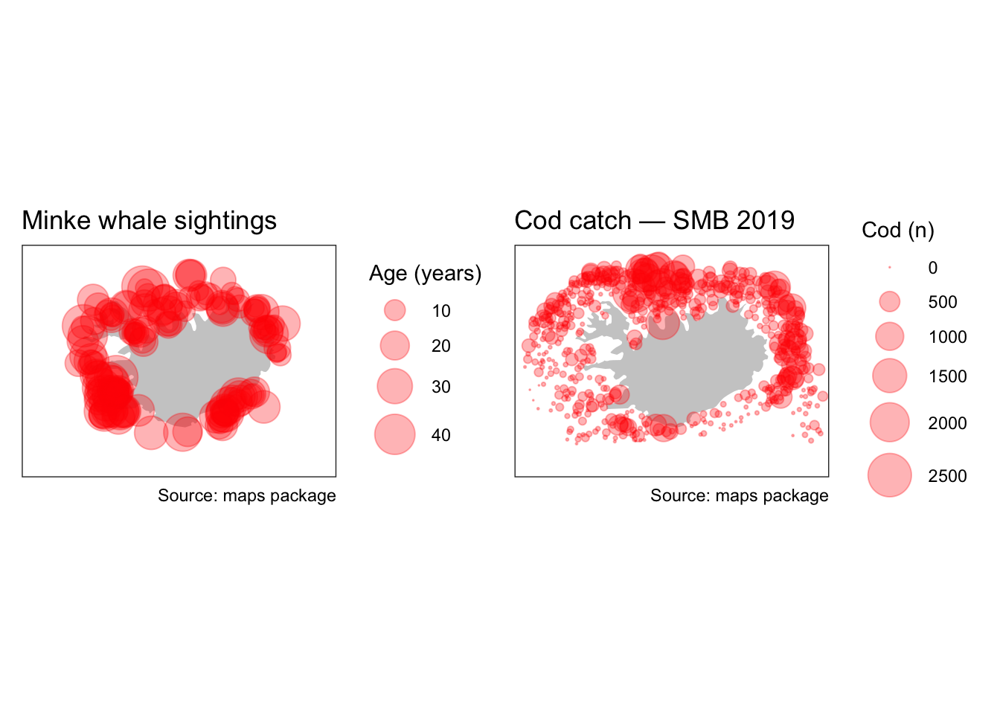
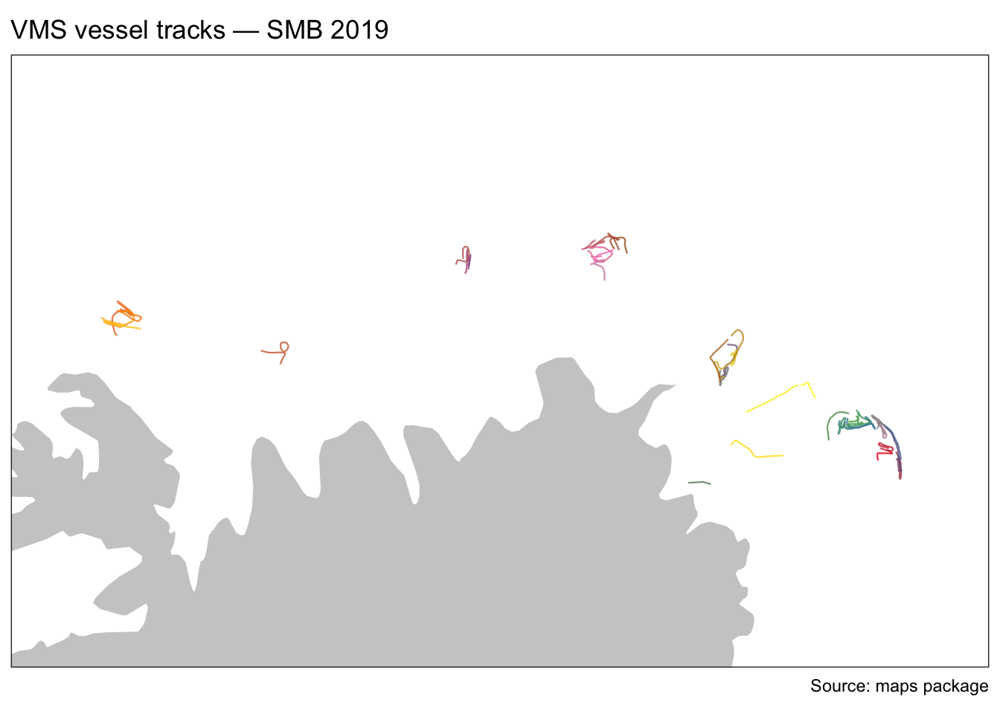
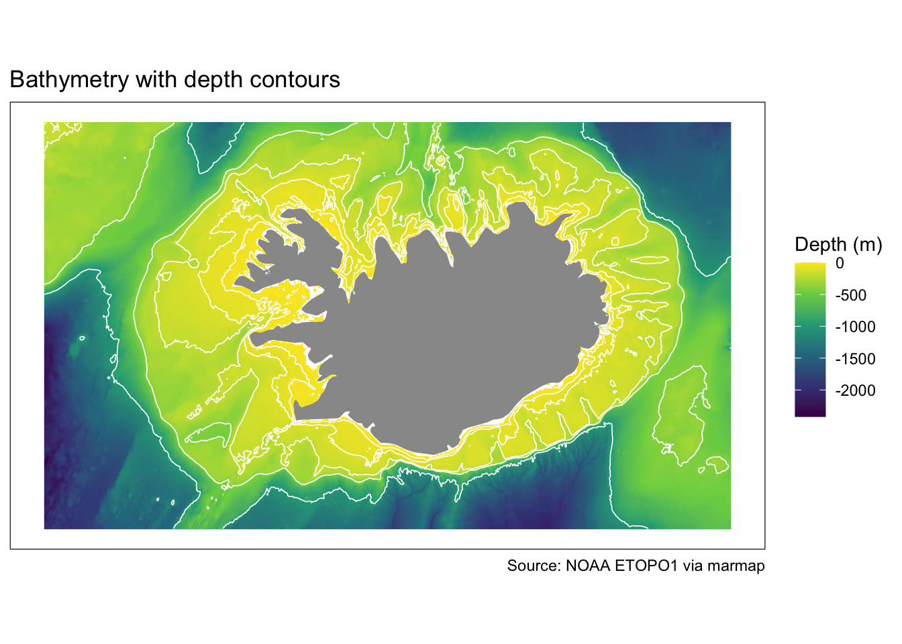
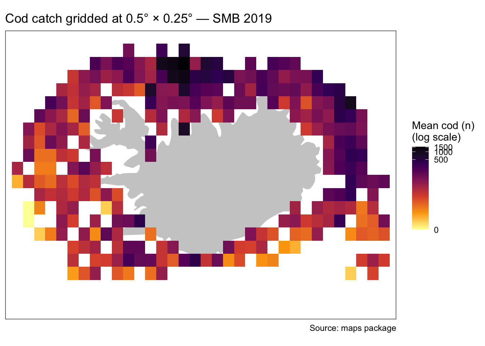

library(tidyverse) # ggplot2, dplyr, readr, etc.
library(maps) # basic country outlines as data frames
library(patchwork) # combining multiple plots
library(marmap) # NOAA bathymetry dataMapping with ggplot2 — part 1
Setup
Libraries
Data
minke_df <- read_csv("data/minke.csv") # renamed: avoids overwriting later
smb <- read_csv("data/smb_summary.csv")
track <- read_csv("data/small_vms.csv") # vessel VMS tracks
xlim <- c(-30.0, -10.0)
ylim <- c( 62.5, 67.5)
depth <-
getNOAA.bathy(lon1 = xlim[1], lon2 = xlim[2],
lat1 = ylim[1], lat2 = ylim[2],
resolution = 1) |>
fortify() |> # convert the bathy object to a plain data frame
filter(z <= 0) # keep only sea cells (negative depth)The basis of ggplot2
ggplot2 implements the Grammar of Graphics (Wilkinson, 2005) — a principled framework that describes any statistical graphic as a composition of independent layers. Because each component is independent, you can add, swap, or modify any one of them without rewriting the rest. This composability is what makes ggplot2 so powerful.
The three key components
- Data — a
data.frameor derivative (tibble,sf, …) - Aesthetic mappings via
aes()— connecting variables to visual properties (position, colour, size, shape, transparency, …) - At least one layer via a
geom_*()function — describing how to render the observations
ggplot(data = minke_df) +
aes(x = lon, y = lat, colour = sex) +
geom_point()
All four lines below produce exactly the same plot. The last form is the most common in practice:
ggplot(data = minke_df) + geom_point(aes(x = lon, y = lat, colour = sex))
ggplot(minke_df) + geom_point(aes(lon, lat, colour = sex))
ggplot() + geom_point(data = minke_df, aes(lon, lat, colour = sex))
ggplot(minke_df, aes(lon, lat, colour = sex)) + geom_point()Aesthetics placed inside ggplot() are global — inherited by all layers. Aesthetics placed inside a geom_*() apply only to that layer. This matters when you have multiple layers that should map variables differently.
Saving a plot
A ggplot can be stored as an R object and extended or shared later:
p <- ggplot(minke_df) + geom_point(aes(lon, lat, colour = sex))
class(p) # "gg" "ggplot"
p |> write_rds("minke.rds") # save to disk
read_rds("minke.rds") # retrieve later, or share with a colleagueExport to an image file with ggsave(). Always set width, height, and dpi explicitly — the defaults rarely produce publication-ready output:
ggsave("minke.png", plot = p, width = 18, height = 12, units = "cm", dpi = 300)
# see ?ggsave for all format and size optionsEmbed in another Quarto or R Markdown document:
knitr::include_graphics("minke.png") 
TipExercise
Create a scatter plot of minke whale sightings with lon on the x-axis, lat on the y-axis, and weight mapped to size. Add scale_size_area(). What does this scale change, and why does it give a more honest representation than the default scale_size()?
Quick backgrounds from the maps package
map_data() returns a data frame of polygon coordinates from the maps package. Let’s inspect the Iceland object:
iceland <- map_data(map = "world", region = "Iceland")
iceland |> glimpse() # coordinates named "long" and "lat"; "order" column mattersRows: 454
Columns: 6
$ long <dbl> -15.54311, -15.42847, -15.24092, -15.16240, -14.96997, -14.8…
$ lat <dbl> 66.22852, 66.22480, 66.25913, 66.28169, 66.35971, 66.38145, …
$ group <dbl> 1, 1, 1, 1, 1, 1, 1, 1, 1, 1, 1, 1, 1, 1, 1, 1, 1, 1, 1, 1, …
$ order <int> 1, 2, 3, 4, 5, 6, 7, 8, 9, 10, 11, 12, 13, 14, 15, 16, 17, 1…
$ region <chr> "Iceland", "Iceland", "Iceland", "Iceland", "Iceland", "Icel…
$ subregion <chr> NA, NA, NA, NA, NA, NA, NA, NA, NA, NA, NA, NA, NA, NA, NA, …Plotting with four different geoms illustrates why row order matters for polygon data:
p <- ggplot(iceland, aes(long, lat))
p1 <- p + geom_point() + labs(title = "geom_point")
p2 <- p + geom_line() + labs(title = "geom_line")
p3 <- p + geom_path() + labs(title = "geom_path")
p4 <- p + geom_polygon() + labs(title = "geom_polygon")
p1 + p2 + p3 + p4
geom_line()sorts by x before drawing, scrambling the coastline.geom_path()connects points in their existing row order — use?geom_pathto confirm this distinction.geom_point()reveals the data resolution: only 454 rows, so coastline detail is limited.geom_polygon()fills the shape, which is usually what you want for land backgrounds. Thegroupaesthetic becomes important when polygons contain holes (e.g. an island inside a lake).
NoteA note on data resolution
The maps package coastlines are low-resolution and suitable only for exploratory work. For publication-quality maps, use higher-resolution boundaries from the rnaturalearth package or the GeoPackage files provided in this course. Both are introduced in the next session using geom_sf().
Projections and coordinate systems
A map is an xy-plot where the aspect ratio encodes a projection. The distortion from treating longitude and latitude as equal units becomes obvious when you map a wide area that spans many degrees of longitude. Here we use the North Atlantic region — the same area students know from the course data — but zoomed out far enough that the difference between the three approaches is unmistakeable:
world <- map_data("world")
# A wide northern-hemisphere window: 120° of longitude, 50° of latitude.
# At ~55°N one degree of longitude is roughly half a degree of latitude in
# ground distance, so the uncorrected plot will look obviously squashed.
xlim_demo <- c(-80, 40)
ylim_demo <- c(30, 80)
p_base <- ggplot(world, aes(long, lat, group = group)) +
geom_polygon(fill = "grey75", colour = "white", linewidth = 0.15) +
xlim(xlim_demo) +
ylim(ylim_demo) +
theme_bw() +
theme(axis.title = element_blank())
# Panel 1 — no coord at all: ggplot default is a square plot device,
# so 120 degrees of longitude gets the same pixel height as 50 degrees
# of latitude. Everything looks compressed vertically.
p_raw <- p_base +
labs(title = "No coord (default)",
subtitle = "120° lon shown same height as 50° lat")
# Panel 2 — coord_fixed(ratio = 1): forces 1 unit on y = 1 unit on x,
# which is still wrong geographically but at least consistent.
# The map is now far too tall — illustrating that "equal units" ≠ correct map.
p_fixed <- p_base +
coord_fixed(ratio = 1) +
labs(title = "coord_fixed(ratio = 1)",
subtitle = "equal axis units — still wrong")
# Panel 3 — coord_quickmap(): computes 1/cos(mean latitude) automatically.
# At the centre of this window (~55°N), cos(55°) ≈ 0.57, so the ratio ≈ 1.74.
# Scandinavia, Iceland, and Britain now look like they do on a standard map.
p_qmap <- p_base +
coord_quickmap(xlim = xlim_demo, ylim = ylim_demo) +
labs(title = "coord_quickmap()",
subtitle = "correct aspect ratio — automatic")
p_raw + p_fixed + p_qmap
- In the first panel the map window is 120° wide but only 50° tall, yet ggplot squashes them into the same plot height. Britain and Scandinavia look squat and compressed.
- In the second panel
coord_fixed(ratio = 1)enforces equal axis units. Now the 50° of latitude takes the same physical space as 50° of longitude, making the map extremely tall. This is also wrong — it would only be correct at the equator, where one degree of longitude equals one degree of latitude in ground distance. - In the third panel
coord_quickmap()automatically computes1 / cos(φ)at the centre latitude (~55°N), giving a ratio of about 1.74. The coastlines of Iceland, Norway, and Britain now match what you see on a globe.
The principle scales to any region: the larger the longitude span or the higher the latitude, the more important the correction becomes. Iceland (ratio ≈ 2.4 at 65°N) is a milder version of the same effect.
NoteWhy
xlim() / ylim() were used here — and why not to use them for data
In the example above, xlim() and ylim() are used on the uncorrected panels purely to crop the display to the same geographic window as coord_quickmap(). On real data layers this would clip polygon edges — recall the pitfall shown in the Layers section. The only safe context for xlim() / ylim() is on a geom_polygon() basemap used purely as a background, and even then coord_quickmap(xlim, ylim) is the cleaner approach.
Note
coord_quickmap() vs coord_sf()
coord_quickmap() is a fast approximation that works well for small areas at mid-latitudes. For correct projections — especially over large extents, near the poles, or in projected CRS — use coord_sf() from the sf package. All later sessions in this course use coord_sf().
Layers
Building a reusable base map
A common workflow is to build a base map object once and reuse it by adding layers on top. Here is a clean base map for Iceland:
basemap <- ggplot() +
geom_polygon(data = iceland,
mapping = aes(x = long, y = lat, group = group),
fill = "grey80",
colour = "white") +
coord_quickmap(xlim = c(-27, -11), ylim = c(62.5, 67.5)) +
scale_x_continuous(NULL, NULL) + # suppress axis titles and tick labels
scale_y_continuous(NULL, NULL) +
theme_bw() +
labs(caption = "Source: maps package")
basemap
Note the group = group aesthetic: without it, geom_polygon() would connect all coordinates in a single polygon, producing a mess when Iceland has multiple separate polygons (islands, etc.).
Any subsequent + call adds a new layer on top of this base.
A pitfall: zooming with xlim() / ylim() vs coord_quickmap()
xlim() and ylim() remove data outside the range before drawing. For polygon data this clips features mid-edge, producing cut coastlines. Setting limits inside coord_quickmap() zooms the view without discarding any data:
dont <- basemap +
xlim(-22, -17) + ylim(63.5, 65) +
labs(title = "xlim() / ylim()", subtitle = "data clipped — coastline cut")
do <- basemap +
coord_quickmap(xlim = c(-22, -17), ylim = c(63.5, 65)) +
labs(title = "coord_quickmap(xlim, ylim)", subtitle = "view zoomed — coastline intact")
dont + do
Important
Always zoom a map via coord_quickmap(xlim = ..., ylim = ...) or coord_sf(xlim = ..., ylim = ...). Never use bare xlim() / ylim() for spatial data.
geom_point() — bubble plots
Mapping a continuous variable to size creates a bubble chart. Use scale_size_area() so that area (not radius) is proportional to the value — a perceptually honest encoding where zero maps to zero area:
p_minke <- basemap +
geom_point(data = minke_df,
aes(lon, lat, size = age),
alpha = 0.3, colour = "red") +
scale_size_area(max_size = 10) +
labs(title = "Minke whale sightings", size = "Age (years)")
p_cod <- basemap +
geom_point(data = smb |> filter(year == 2019),
aes(lon1, lat1, size = cod_n),
alpha = 0.3, colour = "red") +
scale_size_area(max_size = 10) +
labs(title = "Cod catch — SMB 2019", size = "Cod (n)")
p_minke + p_cod
TipExercise
Replace cod_n with saithe_n or haddock_n. Do the spatial patterns differ across species?
geom_segment() — tow tracks
geom_segment() draws a straight line between a start and end coordinate pair — ideal for a quick visualisation of tow tracks:
basemap +
geom_segment(data = smb |> filter(year == 2019),
aes(x = lon1, y = lat1, xend = lon2, yend = lat2),
linewidth = 0.3) +
labs(title = "SMB 2019 tow tracks")
geom_raster() — gridded summaries
geom_raster() draws filled rectangles centred on each (x, y) coordinate. It is efficient for pre-gridded data where the grid spacing is perfectly regular. For irregular grids, use geom_tile() instead — it is slightly slower but does not require equal cell sizes:
s <- smb |>
filter(year == 2019) |>
group_by(ir_lon, ir_lat) |> # ICES rectangles: 1.0° × 0.5°
summarise(Cod = mean(cod_n), .groups = "drop")
basemap +
geom_raster(data = s, aes(ir_lon, ir_lat, fill = Cod)) +
scale_fill_viridis_c(option = "B", direction = -1, name = "Mean cod (n)") +
labs(title = "Mean cod catch per ICES rectangle — SMB 2019")
geom_path() — vessel tracks
geom_path() connects points in the order they appear in the data — the right choice for time-ordered GPS tracks. geom_line() would sort by x first, scrambling any track that doubles back on itself:
basemap +
geom_path(data = track,
aes(x = lon, y = lat, colour = factor(id)),
linewidth = 0.4, alpha = 0.8) +
scale_colour_manual(values = colorRampPalette(RColorBrewer::brewer.pal(9, "Set1"))(n_distinct(track$id))) +
guides(colour = "none") +
coord_quickmap(xlim = c(-23, -11), ylim = c(65, 68)) +
labs(title = "VMS vessel tracks — SMB 2019")
geom_contour() — isolines
geom_contour() draws lines of equal value over a gridded surface. Here we layer it on top of a bathymetry raster to add depth reference lines:
p_depth <- ggplot() +
geom_raster(data = depth, aes(x = x, y = y, fill = z)) +
geom_polygon(data = iceland, aes(long, lat, group = group), fill = "grey60") +
scale_fill_viridis_c(option = "D", name = "Depth (m)") +
coord_quickmap() +
scale_x_continuous(NULL, NULL) +
scale_y_continuous(NULL, NULL) +
theme_bw() +
labs(title = "Bathymetry around Iceland",
caption = "Source: NOAA ETOPO1 via marmap")
p_depth +
geom_contour(data = depth,
aes(x = x, y = y, z = z),
breaks = c(-50, -100, -200, -400, -1000),
linewidth = 0.3,
colour = "white") +
labs(title = "Bathymetry with depth contours")
TipExercise
Change the breaks to show only the shelf edge (around −200 m) and the deep basin (around −1000 m). Try a different contour colour and add a subtitle listing the depths shown.
Gridding point data with grade()
Sometimes you want to aggregate point observations to a regular lon–lat grid at a resolution that does not correspond to any pre-existing classification (such as ICES rectangles). The helper function below bins coordinates to a grid and returns the cell midpoint:
grade <- function(x, dx) {
if (dx > 1) warning("Not tested for grids larger than one degree")
brks <- seq(floor(min(x)), ceiling(max(x)), dx)
ints <- findInterval(x, brks, all.inside = TRUE)
(brks[ints] + brks[ints + 1]) / 2
}
smb2019_gridded <- smb |>
filter(year == 2019) |>
mutate(glon = grade(lon1, 0.5),
glat = grade(lat1, 0.25)) |>
group_by(glon, glat) |>
summarise(Cod = mean(cod_n), .groups = "drop")
basemap +
geom_tile(data = smb2019_gridded,
aes(x = glon, y = glat, fill = Cod)) +
scale_fill_viridis_c(option = "B",
direction = -1,
transform = "log1p",
name = "Mean cod (n)\n(log scale)") +
labs(title = "Cod catch gridded at 0.5° × 0.25° — SMB 2019")
geom_tile() is used here rather than geom_raster() because the output of grade() may have slight floating-point irregularities that cause geom_raster() to fail. For a perfectly regular grid produced by other means, geom_raster() is faster.
Note
A more rigorous gridding approach using sf polygon grids and spatial joins (st_make_grid() + st_join()) is covered in the next session, where we work directly with sf objects.
TipExercise
Modify the grade() call to produce a coarser 1.0° × 0.5° grid and a finer 0.25° × 0.125° grid. How does the choice of resolution affect the visible spatial pattern?
Further reading
The ggplot2 book is the definitive reference. Chapter 3 (individual geoms) and Chapter 11 (colour scales) are particularly relevant to mapping.